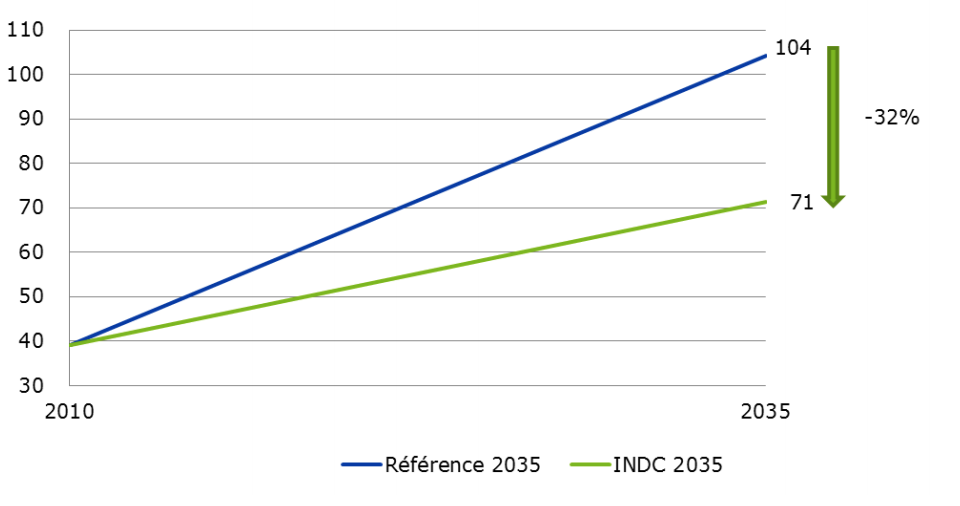

| Données clés | |
|---|---|
| Superficie (km2) | 475 440 |
| Climat | Très variable selon les 5 zones agro-écologiques, cf. note de bas de page 2 |
| Population (2013) | 22 253 000 |
| PNB (Mds US$ 2014) | 32,5 |
| PNB / hab (US$ 2013) (US$ PPA 2013) | 1 308 (2 400) |
| Part de l’agriculture dans le PIB et l’emploi total (2014) | 20% et 60% |
| Consommation énergie primaire (Mtep 2012) | 6,98 |
| Consommation d’énergie primaire / hab (tep 2012) | 0.32 |
| Part des énergies fossiles dans la consommation primaire (2012) | 28% |
| Part des énergies fossiles dans le bouquet électrique (2014) | 46% |
| Capacité électrique installée raccordée (2013) | 1 400 MW |
| Taux d’électrification | 51% |
Sources: Sources nationales; Banque mondiale; Délégation UE à partir de diverses sources.
La CPDN du Cameroun est ancrée dans la vision que le pays a dessinée pour son devenir à l’horizon de 2035: celle de devenir un pays émergent. Cet objectif global s’accompagne d’un ensemble d’objectifs intermédiaires: (i) la réduction de la pauvreté ; (ii) l’atteinte du stade de pays à revenus intermédiaires, (iii) l’atteinte du stade de Nouveau Pays Industrialisé et (iv) la consolidation du processus démocratique et de l’unité nationale dans le respect de la diversité qui caractérise le pays. En termes économiques, cela impliquera notamment une croissance soutenue, une révolution agricole fondée sur l’augmentation de la productivité, et un doublement de la part du secteur secondaire dans la structure du PIB (de 19 à 38%).
Le Cameroun est un faible émetteur de GES (2e Communication nationale). Cette stratégie ambitieuse de développement se traduira par une hausse forte des émissions.
Au travers de cette CPDN, le Cameroun entend réduire l’empreinte carbone de son développement sans ralentir sa croissance, en privilégiant des options d’atténuation présentant des cobénéfices élevés (Section 2 : Atténuation) ; renforcer la résilience du pays aux changements climatiques (Section 3 : Adaptation) ; mettre en cohérence ses politiques sectorielles et renforcer son dispositif et ses outils de mise en œuvre pour faciliter l’atteinte de ces objectifs (Section 4) ; et mobiliser à cet effet tous les moyens pertinents : financements, transferts de technologies et renforcement de capacités (Section 5).
| La Contribution du Cameroun | |
|---|---|
| Type de contribution | Un objectif de réduction des émissions assorti d’actions d’atténuation et d’adaptation |
| Objectif national à long terme sur les émissions de GES | Réduction des émissions de GES à hauteur de 32% par rapport à un scénario de référence pour l’année cible (2035), et conditionnée au soutien de la communauté internationale sous forme de financement, d’actions de renforcements de capacité et de transfert de technologies. |
| Année cible | 2035 |
| Année de référence | 2010 |
| Objectifs sectoriels principaux | Scénario CPDN: (i) verdissement (intensification, sédentarisation) de la politique agricole ; (ii) gestion durable des forêts (iii) augmentation de l’offre énergétique et amélioration de l’efficacité énergétique; (iv) 25% d’énergie renouvelable dans le bouquet électrique à l’horizon 2035. |
| Ambition de la Contribution | L’objectif de réduction des émissions du Cameroun représente un effort significatif pour un pays dont les émissions sont insignifiantes à l’échelon international et dont le PIB par habitant se situe au 148ème rang mondial (2013, en base PPP). |
| Equité de la Contribution | La réduction de 32% en 2035 est du même ordre ou supérieure à celle proposée par des pays comparables ou de la sous-région. Ce niveau d’engagement tient compte des efforts accomplis ou en cours pour réduire les émissions / augmenter les puits de carbone (reboisement, gestion durable des forêts). |
Scenarii de référence et de développement sobre en carbone (CPDN)
Les graphiques ci-après présentent (i) un scénario de référence dans lequel aucune intervention publique nouvelle ne vient tempérer les émissions liées au développement du Cameroun et (ii) un scenario CPDN de développement sobre en carbone (à PIB et niveau de développement identiques) montrant l’impact des grandes actions sectorielles d’atténuation. Ce scénario CPDN est conditionné au soutien de la communauté internationale sous forme de financement, d’actions de renforcements de capacité et de transfert de technologies.
Dans le scénario de référence, les émissions de GES atteignent 104 MtCO2-équ. en 2035, soit une hausse de 166% par rapport à 2010. Dans le scénario CPDN, l’augmentation des émissions est contenue à 71 MtCO2-équ. en 2035, soit une hausse de 82% par rapport à 2010 (39 MtCO2-équ.). En d’autres termes, l’augmentation des émissions par rapport à l’année de base est réduite de moitié (32 contre 65 MtCO2-équ.).

| Hypothèses et approches méthodologiques | |
|---|---|
| Type d’objectif | Réduction en pourcentage par rapport aux émissions de l’année cible dans un scénario de référence. |
| Couverture (du pays) | Tout le pays. |
| Gaz couverts | Dioxyde de carbone (CO2), méthane (CH4), oxyde nitreux (N2O) |
| Secteurs/sources couverts | Agriculture, Energie, Forêt, Déchets – (hors UTCATF pour l’objectif de réduction) |
| Scénario de référence | Ce scénario décrit l’évolution des émissions de GES à l’horizon 2035 par secteur d’activité en fonction des stratégies de développement actuelles. |
| Scénario d’atténuation CPDN | Ce scénario décrit l’évolution des émissions de GES à l’horizon 2035 sur la base d’orientations bas carbone dans les principaux secteurs d’activité, notamment énergie et agriculture. |
| Sources pour les scénarii | Données AIE, Banque mondiale, Enerdata, EDGAR, FAO, PNUE; Stratégies de développement (Cameroun Vision 2035, DSCE), Stratégies sectorielles (PDSE, PNIA, etc.). |
| Pouvoir de réchauffement global (PRG) | Les valeurs de PRG utilisées sont celles déterminées par le Groupe intergouvernemental des experts sur le climat (GIEC, AR4). |
| Emissions de l’année de référence | L’inventaire de l’année de référence est construit sur la base des données AIE, FAO et EDGAR. Données à revoir lors du prochain inventaire. |
| Méthodologie de projection des émissions du scénario de référence | Le scénario de référence est construit en appliquant aux émissions des différents secteurs des hypothèses d’évolution dépendant des taux de croissance sectoriels, de l’évolution de la population, du bouquet énergétique et de l’évolution tendancielle de l’efficacité du secteur. |
| Méthodologie de projection pour le scénario CPDN | Le scénario CPDN est construit en appliquant aux émissions sectorielles du scénario de référence une estimation des réductions découlant de la mise en place des Actions sectorielles – agriculture, forêt, déchets, énergie (par ex. bouquet électrique 25% EnR : 11% micro-hydro ; 7% biomasse ; 6% solaire PV ; 1% éolien). |
| Approche concernant les émissions relatives à l’affectation des terres, les changements d’affectation et la foresterie (UTCATF) | Les émissions de ce secteur important au Cameroun devront faire l’objet d’une analyse plus précise d’ici 2020 pour pouvoir être intégrées à l’objectif général. Cela pourra se faire grâce notamment à une meilleure connaissance des superficies par type de sols. |
Le Cameroun entend mettre en œuvre les Actions d’atténuation suivantes, en cohérence avec ses orientations de développement.
Agriculture / Pêche / Elevage / Forêt
Grands enjeux du secteur agriculture/élevage/pêche: (i) Recherche de l’autosuffisance, sécurité alimentaires, développement de l’agro-industrie et (ii) Amélioration de la productivité et de la compétitivité.
Grands enjeux du secteur forestier : (i) Gestion durable des forêts par l’exploitation et valorisation des forêts productives dans le cadre de plans d'aménagement, (ii) Contribution à la croissance économique et à la lutte contre la pauvreté à travers la rétrocession d’une partie des recettes fiscales aux collectivités, la création d’emplois, la création de forêts communales dans le DFP et de forêts communautaires dans le DFnP (iii) Conservation de la biodiversité à travers le renforcement du réseau national d’aires protégées, (iv) Mise en cohérence du système foncier grâce aux plans de zonage.
MESSAGE CLE : « L’agriculture a été et demeure le pilier de l’ambition d’émergence du pays mais il est possible et même nécessaire de limiter son impact carbone. La gestion durable des forets permettra d’augmenter le puits carbone. Cette croissance bas-carbone apportera d’importants cobénéfices (développement économique et social, création d’emplois, amélioration de l’environnement et de la santé, etc.).»
| Orientation | Actions | Analyse coûts-bénéfices |
|---|---|---|
| 1) Mise en cohérence de la planification et de l’aménagement de l’espace rural pour développer l'agriculture tout en limitant la déforestation / dégradation | - Assurer la cohérence entre les plans de développement agricole et les stratégies de limitation de la déforestation ou de la dégradation (processus REDD+) grâce au Schéma national d’aménagement et du développement durable du territoire (prévu pour 2017) en concertation avec chacune des filières et les territoires ; - Créer les conditions favorables au développement du secteur en améliorant la gouvernance en impliquant tous les acteurs concernés et en s’appuyant sur la décentralisation, afin d’assurer de façon efficace et efficiente la planification, la programmation, la budgétisation, la mobilisation des financements, la mise en œuvre et le suivi-évaluation du développement du secteur rural ; - Renforcer la gestion durable et la valorisation des forêts et de la biodiversité, notamment grâce au suivi spatial des terres ; - Favoriser la réhabilitation des terres dégradées et le reboisement des savanes anthropiques, et renforcer les puits de carbone dans les forêts dégradées ; - Développer les infrastructures de base qui permettront d’améliorer la logistique des transports de produits agricoles, d’élevage et de pisciculture. |
Impacts sur les émissions de gaz à effet de serre: L’évaluation de l'impact de ces stratégies agricoles ou forestières nécessiterait une collecte de données fiables et mesurables. Un exercice simplifié a toutefois pu être mené pour évaluer les tendances: - Le scénario de référence, basé sur l'hypothèse de croissance du secteur agricole, aboutit à une multiplication par 3 des émissions de gaz à effet de serre du secteur en 2035 par rapport à l'année de référence. - Le scénario bas-carbone permettrait une diminution de 33% des émissions en 2035 par rapport au scénario de référence. Cobénéfices du développement agricole et de la stratégie de limitation de la déforestation: - développement des infrastructures et mise à disposition d’équipements permettant une amélioration de la qualité de vie, notamment dans le milieu rural ;- amélioration de la productivité et de la croissance agricole permettant l’amélioration de la compétitivité, la création de richesses et la réduction de la pauvreté ; - stimulation de la création d’industrieslégères à vocation agricole dans le milieu rural: effets positifs sur l’économie sociale : création d’emplois en milieu rural (création de dizaines de milliers d’emplois formels par an dans les dix prochaines années) ; - la conservation de la biodiversité permet le maintien de pools de gènes, d’espèces et d’écosystèmes tout en contribuant à la création d’emplois - développement du capital humain (encadrement, formation et organisation des producteurs, des éleveurs, des aquaculteurs et des forestiers) - autonomisation des femmes et protection des populations vulnérables et minorités - diminution de l’agriculture itinérante ; - amélioration de la situation alimentaire et nutritionnelle ; - développement des usages récréatifs de la forêt ; - meilleure résilience aux changements climatiques. Coûts |
| 2) Intensification d'une production agricole, animale et halieutique respectueuse de l'environnement et permettant de limiter la déforestation / dégradation | - Découpler la production agricole de la déforestation / dégradation via l’intensification des pratiques agricoles durables sur l’environnement et l’agroforesterie (notamment grâce à la sécurisation du foncier) ; - Favoriser l’utilisation de semences améliorées à haut rendement et résistantes aux facteurs contraires de l’environnement (hors OGM et hybrides) ; - Développer les espèces à haut rendement, à cycle court et permettant de faire des rotations rapides ; - Renforcer les partenariats et collaborations pour améliorer la productivité des sols, la mise en œuvre d’innovations agricoles ; développer l’agriculture raisonnée, conservatoire ou durable ; - Développer une mécanisation efficiente de l'agriculture et améliorer les infrastructures de transformation et de conditionnement afin de rallonger la chaîne de valeur: - Utiliser et valoriser durablement les ressources naturelles par la promotion équilibrée de l’ensemble des filières, en tenant compte des contraintes de conservation de l’environnement et l’adaptation aux changements climatiques. |
|
| 3) Promotion des pratiques permettant d'améliorer les capacités de production agricole et valoriser les ressources du milieu | - Promouvoir l’intégration agriculture-élevage, l’agroforesterie, et l'agriculture de conservation en particulier au niveau des plantations communautaires et privées ; - Améliorer la productivité agricole à travers la valorisation optimale des ressources en terres et en eau, l’amélioration du cadre de vie des producteurs ruraux et leur connexion aux marchés, l’amélioration de l’accès aux matériels, équipements et aux financements adaptés ; - Restaurer les sols organiques et promouvoir la recherche sur la gestion des ressources naturelles (notamment les sciences des sols et la physiologie pathologie et technologie post récolte) ; - Adapter les calendriers culturaux, et les techniques de production - Limiter les émissions de méthane de la riziculture en réduisant au maximum la submersion. |
|
| 4) Valorisation notamment énergétique des ressources en milieu rural yc les déchets | - Réduire la consommation non durable de bois de chauffage par exemple par la gestion durable du bois-énergie ; les foyers améliorés, et la promotion de la méthanisation et/ou de la butanisation dans l'espace rural ; - Développer la production d’énergie à base de déchets agricoles, notamment par la valorisation des cabosses de cacao, pommes d’anacarde, bagasses de canne à sucre, mélasse, effluents de manioc, paille de riz pour la production des briquettes ; etc. - Développer la production de compléments alimentaires pour animaux et poisson et autres produits (ensilage, etc.) ; - Développer l’utilisation de fumiers améliorés par compostage. |
Energie / Déchets
Grands enjeux de l'énergie: (i) Améliorer l'accès des populations et des industries à l'électricité en quadruplant la capacité de production à l’horizon 2035 pour passer à 6GW ; (ii) accroître l'utilisation des énergies renouvelables dans la production d'électricité, surtout dans les zones difficilement raccordables au réseau électrique et (iii) faire de l’efficacité énergétique une priorité nationale. Grands enjeux des déchets: améliorer la salubrité urbaine notamment en faisant des déchets une ressource pour la production d’énergie
MESSAGE CLE: « Porter à 25% la part des énergies renouvelables hors grande hydro dans le bouquet électrique en 2035 »
| Orientation | Actions | Analyse coûts-bénéfices |
|---|---|---|
| 5) Maîtrise de la consommation énergétique des systèmes par une politique d'efficacité énergétique volontariste | Transversales: Industrie : Bâtiments : Transport : limiter la mobilité contrainte et développer les offres de transport bas-carbone |
Impacts sur les émissions de gaz à effet de serre: L’évaluation de cet impact nécessiterait une évaluation détaillée. Un exercice simplifié a toutefois pu être mené pour évaluer les tendances: Cobénéfices de la stratégie énergie-déchet - amélioration de la productivité des entreprises Coûts Le montant total des investissements nécessaires pour la mise en œuvre du PDSE à l’horizon 2035 a été évalué à 8 270 md de FCFA (scénario médian). Une évaluation simplifiée du coût de mise en œuvre du bouquet électrique proposé dans le scénario bas carbone n'a pas montré de surcoût financier significatif (en base LCOE) mais devra être précisée dans une étude ultérieure. |
| 6) Valorisation efficiente des ressources pour tendre vers une économie circulaire | - Renforcer les politiques de gestion des déchets (d’ici à 2035, toutes les grandes villes devraient avoir des décharges aménagées avec au moins 70% de captage de méthane) ; - Promouvoir le développement d’une économie circulaire ; Récupérer / utiliser les déchets agricoles et forestiers ; compostage ; Valorisation / traitement des autres déchets (station d’épuration, boues de vidange, etc.) |
|
| 7) Développement de la production d'énergie à partir de sources renouvelables | - Réaliser une évaluation exhaustive du potentiel des énergies renouvelables (l’étude partielle d’Invest’€lec a recensé 262 sites de petite hydro et 25 sites de biomasse-énergie pour un total cumulé de 284MW de capacité. 35 projets pilote (23 hydro, 9 biomasse et 3 solaires PV) ont été identifiés ; |
Le schéma ci-dessous présente les hypothèses d’évolution du bouquet électrique dans les différents scenarii:

Le schéma ci-dessous montre la part relative des différents secteurs dans l’atteinte de l’objectif global proposé:

En juin 2015 le Cameroun a validé un Plan national d’adaptation aux changements climatiques (PNACC) qui inclut, entre autres, une évaluation des évolutions du climat dans chacune des cinq zones agro-écologiques1, une évaluation de la sensibilité, de la vulnérabilité et de la résilience sectorielles et géographiques, une stratégie d’intervention 2016-2025, une évaluation des pertes, risques et lacunes, un plan d’action quinquennal 2016-2020 décliné en 20 fiches-projets détaillées.
La vision du PNACC est qu’en 2035, « les changements climatiques dans les cinq zones agro-écologiques du Cameroun sont complètement intégrés au développement durable du pays, réduisant ainsi sa vulnérabilité, et transformant même le problème des changements climatiques en une solution / opportunité de développement. Ainsi les Camerounais – particulièrement les femmes, les enfants et les personnes vulnérables – et les secteurs économiques du pays acquièrent une plus grande résilience et une plus grande capacité d’adaptation aux impacts négatifs des changements climatiques ».
Afin d’atteindre ce résultat, le PNACC a présenté un programme stratégique basé sur 4 axes:
Axe stratégique 1 : Améliorer les connaissances sur les changements climatiques
Recommandations : Soutenir la recherche ; Affiner les scénarios climatiques, Vulgariser les informations climatiques ; Mettre en place un système d’observation, d’information et d’alerte ; Constituer une base de données pour les suivi d’indicateurs et le MRV.
Axe stratégique 2 : Informer, éduquer et mobiliser la population camerounaise pour s’adapter aux changements climatiques
Recommandations : Les communautés et les groupes vulnérables sont les cibles prioritaires ; Soutenir les actions de plaidoyers ; Mener des mobilisations communautaires ; Favoriser les actions d’IEC ; Utiliser les medias de proximité et traditionnels ; Partager les expériences d’adaptation.
Axe stratégique 3 : Réduire la vulnérabilité aux changements climatiques dans les principaux secteurs et zones agro-écologiques du pays
Recommandations : Evaluer les coûts ; Financer des études et mesures concrètes ; Concevoir des mécanismes financiers d’incitation.
Axe stratégique 4 : Intégrer l’adaptation aux changements climatiques dans les stratégies et politiques sectorielles nationales
Recommandations : Prendre en compte l’adaptation dans les planifications et les budgétisations nationale et locales; Intégrer le CC dans le schéma d’Aménagement du Territoire ; Mener des études spécifiques pour mieux cerner les risques ; Participer aux échanges internationaux.
Douze secteurs économiques ont été pris en compte dans chacune des 5 ZAE pour évaluer leur vulnérabilité aux paramètres précédents :
- huit secteurs thématiques: Agriculture, Élevage, Pêche et aquaculture, Foresterie, sylviculture et faune, Eau, assainissement et santé, Énergie, mines et industries, Développement urbain et travaux publics, Tourisme ;
- quatre secteurs transversaux, conformément à la DSCE : Éducation, recherche et formation professionnelle, Artisanat et économie sociale, Télécommunications, Genre, population vulnérable, protection sociale et solidarité nationale.
L’analyse des impacts et la vulnérabilité par ZAE et par secteur nous montre que :
- Les zones les plus vulnérables sont : la ZAE soudano sahélienne et la ZAE côtière à pluviométrie monomodale ;
- Les secteurs les plus vulnérables sont (i) l’agriculture, et (ii) l’eau l’assainissement et la santé ;
- Environ 320 000 personnes sont annuellement exposées aux catastrophes climatiques.
La vulnérabilité sera globalement forte à très forte dans les zones 4 et 5, forte à moyenne dans le reste du pays mais avec des tendances fortes dans les massifs forestiers ou montagneux. Malgré la forte variabilité par ZAE, on peut estimer que pour les secteurs :
- Agriculture : La vulnérabilité sera globalement forte à très forte dans les zones 1, 2 et 4, forte à moyenne dans le reste du pays (sécheresses, hausse des températures) ;
- Élevage: La vulnérabilité sera globalement forte à très forte dans les zones 1, 2 et 3, forte à moyenne dans le reste du pays (sécheresses, hausse des températures) ;
- Pêche et aquaculture : La vulnérabilité sera globalement forte à moyenne dans tout le pays, surtout dans les zones 5, 1, et 4, forte à moyenne dans le reste du pays (sécheresses, hausse des températures) ;
- Foresterie, sylviculture et faune : La vulnérabilité sera globalement forte à très forte dans les zones 4 et 5, forte à moyenne dans le reste du pays mais avec des tendances fortes dans les massifs boisés (sécheresses, évènements extrêmes) ;
- Eau, assainissement et santé : La vulnérabilité sera globalement forte à très forte dans les zones 4 et 5, forte à moyenne dans le reste du pays mais avec des tendances fortes dans les massifs boisés (sécheresse, inondations et mouvement de terrain) ;
- Énergie, mines et industries : La vulnérabilité sera globalement forte à très forte dans les zones 5 et 2, forte à moyenne dans le reste du pays (précipitations, sècheresse, montée du niveau de la mer) ;
- Développement urbain et travaux publics : La vulnérabilité sera globalement forte à très forte dans les zones 5 et 4, forte à moyenne dans le reste du pays (inondations, montée du niveau de la mer) ;
- Tourisme : La vulnérabilité sera globalement moyenne à faible dans le pays, sauf dans les massifs montagneux et la zone 1 (Sècheresse).
La stratégie d’intervention 2016-2025 (non chiffrée) débouche sur un plan d’action quinquennal préliminaire 2016-2020, décliné en 20 fiches programmes regroupées ci-après par thématiques générales. Les fiches 1 à 5 concernent des projets transversaux, les fiches 6 à 20 les projets sectoriels. En général le Maître d’ouvrage sera le MINEPAT, assisté par une ou plusieurs structures techniques (Ministère ou Comité de coordination interministériel) agissant en tant que Maître d’ouvrage délégué ou Maître d’œuvre. Les montants indiqués, soit 1,8 milliards de dollars sur 5 ans, sont indicatifs, basés 1) sur le montant de 16$ par an et par habitant proposé par la Banque Mondiale pour l’Afrique Sub-saharienne2 et 2) sur la hiérarchie des priorités sectorielles du Gouvernement camerounais. Des études complémentaires permettront une ventilation de ces budgets en projets confiés aux divers partenaires :
| Thématiques générales / Programmes | mln $ | % | Maitre d'ouvrage délégué / Maître d'œuvre |
|---|---|---|---|
| Agriculture, Elevage, Pêche | |||
| Programme 16 : Développement d’une agriculture intégrée et résiliente face aux effets des changements climatiques: aménagement de l'espace, choix des techniques agronomiques et intensification; Gestion des besoins en eau; développement de l'agriculture durable /conservatoire / durable; gestion des pollutions hydriques; gestion et exploitation des déchets | 385 | 21% | Comité de coordination (MINADER, ministères sectoriels concernés et structures faîtières) |
| Programme 17 : Réduction de la vulnérabilité de l’élevage aux effets des changements climatiques (REVEECC): Gestion des pâturages, des points d'eau; Gestion de l'espace, cartographie des terroirs; amélioration de l'agriculture itinérante; production fourragère | MINEPDED et MINEPIA | ||
| Programme 18: Réduction des effets des changements climatiques sur le secteur halieutique: Adaptation de la pêche, de l'aquaculture, de la pisciculture | MINEPIA | ||
| Aménagement du territoire / gestion des risques | |||
| Programme 01 : Mettre à niveau les systèmes nationaux de collecte de données hydro -météorologiques, d’analyse, de prévision, d'information, d’alerte précoce, et renforcement des capacités | 600 | 33% | MINTRANSPORT, MINATD, MINEPDED |
| Programme 02 : Actualisation des plans de contingence national, régionaux et départementaux, accroissement et opérationnalisation du fonds d’urgence | MINADT, MINEPDED, MINFI | ||
| Programme 03 : Développement des programmes Risques climatiques et Plan d’Affectation des Terres: Cartographie des terroirs; Schémas directeurs d’aménagement national, provinciaux, départementaux, communautaires; Système de suivi. | MINCAF | ||
| Programme 05 : Protection et aménagement du littoral contre les effets des changements climatiques; Restauration et gestion des mangroves; Utilisation des ressources; Adaptation des infrastructures | MINEPDED, MINDEF, MINEPIA et MINDCAF | ||
| Programme 07 : Adaptation des référentiels techniques de construction des infrastructures aux effets des changements climatiques | MINTP, MINEPAT, MINMAP et ONACC | ||
| Programme 08 : Réduction de la vulnérabilité des populations urbaines aux effets des changements climatiques | MINHDU | ||
| Programme 09 : Amélioration de la gouvernance foncière locale en réponse aux changements climatiques | MINDCAF, MINATD | ||
| Energie, Industrie | |||
| Programme 11 : Changements climatiques et gestion intégrée de déchets ménagers, collecte et valorisation | 310 | 17% | MINEPDED |
| Programme 12 : Diversification de l’offre énergétique dans un contexte de changement climatique | MINEE | ||
| Programme 15 : Prise des changements climatiques dans le développement des activités touristiques et artisanales: Utilisation des ressources par l'artisanat (eau, RN, etc.); Développement et adaptation des sites touristiques | MINPMEESA et MINTOUL | ||
| Programme 20 : Prise en compte du changement climatique dans le développement des industries au Cameroun: gestion de l'espace, protection des zones à risque climatique; approvisionnements en énergies, eau, services; déchets et pollutions, émission de GES. | MINEPDED, MINIMIDT | ||
| Forêts | |||
| Programme 19 : Réduction de la vulnérabilité des forêts aux changements climatiques au Cameroun: inventaires, gestion et conservation des blocs forestiers, reconstitution du couvert forestier, surtout dans les zones sensibles (têtes de source, berges, etc.); agroforesterie villageoise; valorisation des déchets végétaux ; développement des transformations in situ; conservation de la biodiversité; gestion des trafics et du braconnage; gestion des feux de brousse | 150 | 8% | MINFOF et MINEPDED |
| Gestion des eaux / Santé / Social | |||
| Programme 10 : Adaptation de la politique nationale genre et réduction de leur vulnérabilité au changement climatique | 300 | 16,5% | MINAS et MINPROF |
| Programme 13 : Renforcement et sécurisation de l’accès aux ressources en eau et aux services d’assainissement dans un contexte de changement climatique; sécurisation des services environnementaux; gestion des eaux de surface et des nappes phréatiques, protection des têtes de source; Fixation des berges et des sols; Rôle des femmes; plans d'utilisation des eaux de surface ou de profondeur; luttes contre les pollutions (agricoles, industrielles, sanitaires, etc.); prévention des évènements extrêmes (inondations); conservation de la biodiversité aquatique | MINEE | ||
| Programme 14 : Renforcement des capacités d’adaptation du système de santé nationale face aux changements climatiques; Carte sanitaire; maladies émergentes; systèmes d'alerte | MINSANTE | ||
| Renforcement des capacités / Communication | |||
| Programme 04 : Sensibilisation de la population, des professionnels, des administrations et des décideurs sur les effets des changements climatiques et sur les mesures à prendre | 70 | 4% | MINEPDED |
| Programme 06 : Éducation, formation professionnelle et renforcement des capacités sur le changement climatique: curricula et outils pédagogiques, formations spécialisées; formation continue; bourses d'études; appui à la recherche. | MINESUP, MINESEC, MINEDUB, MINRESI, MINEPDED, MINEFOP | ||
| Totaux (2016-2020) | 1815 | 100% | |
Le Cameroun prendra les mesures suivantes pour mettre en œuvre cette CPDN, en assurer le suivi et le cas échéant l’actualisation.
| Description | Objectif | |
|---|---|---|
| Cadre institutionnel | Intégrer les changements climatiques dans la planification nationale et les politiques sectorielles | Mise en cohérence des plans et politiques sectoriels avec les objectifs et Actions d’atténuation et d’adaptation |
| Rendre opérationnel l’Observatoire national sur les changements climatiques (ONACC) créé en 2009. | Assurer une mise en œuvre efficace d’une politique nationale transversale | |
| Le conseil d’orientation de l’ONACC est notamment en charge de la planification, de la coordination de la mise en œuvre, du suivi et de l’évaluation de la CPDN ; l’ONACC est particulièrement en charge du suivi-évaluation. | ||
| Evaluer l’impact climat de toute loi ou politique/programme/projet public nouveau (étude d’impact) | Intégrer le climat dans les processus de décision publique | |
| Opérationnalisation de la CPDN | Traduire la CPDN en programmes opérationnels basés sur les stratégies sectorielles | Opérationnaliser la CPDN |
| - Améliorer les systèmes d’établissement et de collecte des données sur les émissions (monitoring). - Réalisation d’un inventaire annuel |
Obtenir des données fiables sur les émissions de GES | |
| Etudes complémentaires (à réaliser après soumission de la CPDN) : - affiner les coûts des Actions de la CPDN et quantifier leurs co-bénéfices - améliorer la connaissance de l’utilisation et la gestion des terres au Cameroun - évaluation du potentiel des énergies renouvelables - opérationnalisation du PNACC et options pour leur financement - évaluation de l’opportunité d’une fiscalité écologique |
Chiffrer et affiner la description des Actions d’atténuation et d’adaptation de la CPDN | |
| Suivi-évaluation (MRV) | Indicateurs : - émissions annuelles globales et sectorielles de GES - intensité carbone du PIB et des principaux secteurs en 2015, 2020, 2025, 2030 et 2035 - capacité annuelle installée en énergies renouvelables - indicateurs d’adaptation et de vulnérabilité (à préciser) - suivi de l’affectation des terres agricoles |
Suivi de la mise en œuvre de la CPDN |
| Codage des dépenses liées aux changements climatiques (par ex. sur la base des ‘Rio Markers’ développés par OCDE-CAD) dans le budget de l’Etat | Suivi des recettes et dépense climat dans le budget national | |
| Création d’un système de suivi de l’ensemble des dépenses et financements liés au climat | Suivi des ressources et dépenses nationales globales liées au climat | |
| Communication | - campagne de communication fin 2015 sur CPDN et COP 21, en direction de la société civile - mise en place d’un site internet dédié sur la politique nationale en matière de changement climatique / CPDN, où les indicateurs supra seront publiés |
|
| Actualisation de la CPDN | Périodicité : Révision à la lumière des résultats de la COP21, si nécessaire. Tous les 5 ans sauf indication contraire issue des COP | |
| Financement | Le Cameroun entend mobiliser les sources suivantes pour financer les Actions d’atténuation et d’adaptation de cette CPDN : | |
| Financements privés | Le Cameroun entend mobiliser des financements privés internationaux ou domestiques pour le co-financement des Actions de cette CPDN, particulièrement celles pouvant générer une rentabilité financière acceptable pour le secteur privé. A cet effet, le Cameroun s’attachera à renforcer la capacité des marchés financiers et système bancaire domestiques à mobiliser et déployer l’épargne nationale notamment sur les projets concourant à un développement sobre en carbone et résilient au changement climatique, ainsi que l’attractivité du Cameroun pour les IDE (climat des investissements). | |
| Budget national | Le Cameroun augmentera ses financements budgétaires en faveur des Actions de cette CPDN qui relèvent de la compétence de l’Etat et que ne pourrait pas financer l’assistance internationale. Cet effort de l’Etat peut prendre la forme soit de dépenses budgétaires directes soit transiter par des fonds spécifiques financés notamment à partir du budget de l’Etat. | |
| Bailleurs de fonds / PTF | Le Cameroun sollicitera l’appui des bailleurs de fonds et PTF (notamment en dons et assistance technique) pour le financement des Actions de cette CPDN. | |
| Fonds vert pour le climat | Le Cameroun réfléchit à l’opportunité de mettre en place une entité nationale éligible (accréditée) au FVC et autres organismes internationaux. Le Cameroun sollicitera aussi l’appui des entités régionales et multilatérales accréditées pour cofinancer les Actions de cette CPDN. | |
| Marchés du carbone | Le Cameroun soutient l'inclusion des marchés internationaux du carbone dans un accord post 2020 sur le climat et propose qu’un tel instrument, couplé à un régime comptable approprié, puisse être utilisé pour aider à financer certains investissements dans les infrastructures sobres en carbone et résilientes au changement climatique. Le Cameroun considère que certaines des Actions de cette CPDN, ou des actions supplémentaires, pourraient être financées en tout ou en partie par le transfert international d’actifs carbone en veillant au respect des principes d'intégrité de l'environnement et de transparence. | |
| Autres instruments économiques | L’opportunité de déployer des outils permettant de générer un signal prix sur le coût social du carbone (marché ou taxe carbone) et ainsi d’internaliser l’externalité carbone sera explorée | |
| Première tranche quinquennale | La CPDN est déclinée en tranches quinquennales. Une première tranche quinquennale d’Actions à financer sera présentée début 2016. | |
| Renforcement des capacités | Atténuation | A tous les niveaux : lien entre développement, énergie et changement climatique ; suivi/évaluation des activités
|
| Adaptation | Informer, éduquer et communiquer sur les risques climatiques
- Sensibiliser les populations sur les impacts du changement climatique - Développer les capacités des populations à anticiper les impacts et augmenter leur résilience Système de Gestion de l’Information Environnementale - Coordonner les activités de l’ONACC et de l’Observatoire national des risques (ONR) pour la prévision des évènements météorologiques et des impacts des changements climatiques. - Créer un réseau d’observation et de suivi de la dynamique du trait de côte à l’échelle nationale afin d’identifier les territoires à risque d’érosion côtière et examen d’un ou de plusieurs indicateurs traduisant la relation climat / érosion côtière. Renforcer la résilience des pratiques productives - Le renforcement des capacités des acteurs (surtout femmes jeunes et personnes âgées, peuples autochtones, agriculteurs, etc.) porte sur de nouveaux itinéraires techniques dans le cadre de modes de productions intensifiés et durables. |
|
| Transferts de technologie et R&D | - Développement des partenariats entre les entreprises et les centres de recherche sur le développement de solutions bas-carbone. - Meilleur accès à des outils (par exemple calage des cycles culturaux à la saison pluvieuse) |
|
| AER | Agence d’électrification rurale |
| BAD | Banque africaine de développement |
| CC | Changements climatiques |
| CCNUCC | Convention cadre des Nations Unies sur le changement climatique |
| CES | Conservation des eaux et du sol |
| COP | Conférence des Parties (à la CCNUCC) |
| CPDN | Contribution prévue déterminée au plan national (= INDC) |
| DFP | Domaine forestier permanent |
| DFnP | Domaine forestier non permanent |
| DSCE | Document de stratégie sur la croissance et l’emploi |
| EE | Efficacité énergétique |
| EnR | Energies renouvelables |
| FAO | Food and Agriculture Organization |
| FCFA | Franc CFA |
| FEICOM | Fonds spécial d’équipement et d’intervention intercommunale |
| GES | Gaz à effet de serre |
| GIEC | Groupe intergouvernemental des experts sur le climat |
| IDE | Investissements directs étrangers |
| IFD | Institutions financières de développement |
| INDC | Intended Nationally Determined Contribution (= CPDN) |
| IREN | Institut de recherche sur les énergies renouvelables |
| LCOE | Levelized cost of electricity |
| MINADER | Ministère de l’agriculture et du développement durable |
| MINATD | Ministère de l’administration territoriale et de la décentralisation |
| MINEE | Ministère de l’eau et de l’énergie |
| MINEPAT | Ministère de l’économie, du plan et de l’aménagement du territoire |
| MINEPDED | Ministère de l’environnement, de la protection de a nature et du développement durable |
| MINEPIA | Ministère de l’élevage, pêche et industrie animale |
| MINHDU | Ministère de l’habitat et du développement urbain |
| MINFOF | Ministère de la forêt et de la faune |
| MINTRANS | Ministère des transports |
| Md | Milliard |
| Mln | Million |
| MtCO2-équ | Millions de tonnes de dioxide de carbone ou équivalents |
| Mtep | Millions de tonnes d’équivalent pétrole |
| NAMA | Nationally Appropriate Mitigation Actions |
| ONACC | Observatoire national sur les changements climatiques |
| OCDE | Organisation pour la coopération économique et le développement |
| PDSE | Plan de développement long terme du secteur électrique |
| PF | Politique forestière et Plan stratégique de mise en œuvre |
| PIB | Produit intérieur brut |
| PNDP | Programme national de développement participatif |
| PNUE | Programme des nations unies pour l’environnement |
| PPA | Parité des pouvoirs d’achat |
| PRG | Pouvoir de réchauffement global |
| PTF | Partenaires techniques et financiers |
| REDD+ | Reduced Emissions from Deforestation and Forest Degradation |
| UE | Union européenne |
| UNECA | Commission économique des Nations Unies pour l’Afrique |
| US$ | Dollar des Etats Unis |
| UTCATF | Utilisation des terres, changements d’affectation des terres et forêts |
| ZAE | Zone agro-écologique |
Sources |
|---|
| Transversales |
| Cameroun Vision 2035 |
| Document de Stratégie pour la Croissance et l’Emploi (DSCE) |
| 1ère communication nationale du Cameroun |
| 2ème communication nationale du Cameroun |
| Loi N° 2013 / 004 du 18 avril 2013 fixant les incitations à l’investissement privé en République du Cameroun. |
| Décret N° 2009/410 du 10 décembre 2009 portant création, organisation et fonctionnement de l’Observatoire National sur les Changements Climatiques |
| Document de stratégie de développement du secteur rural |
| Inventaire national des GES 2013 |
| Loi n°00211/008 du 06 mai 2011 d’orientation pour l’aménagement et le développement durable du territoire au Cameroun |
| Stratégie et Plan d’action national pour la biodiversité version 2, 2012 |
| Atténuation (général) |
| Mesures d’atténuation, MINEPDED 2013 |
| Energie |
| Fiche pays Cameroun de la Délégation de l’UE |
| Bilan des opportunités de projets de production décentralisée d’électricité identifiées par invest’€lec |
| Elaboration de la stratégie sectorielle eau et énergie – Variables d’action domaine énergie, 2011 Projet de loi portant promotion et développement des énergies renouvelables au Cameroun |
| Etat des lieux du cadre réglementaire du secteur des énergies renouvelables au Cameroun – Etude Global Village Cameroun, 2012 |
| Livre Blanc de la CEEAC et de la CEMAC : Politique régionale pour un accès universel aux services énergétiques modernes et le développement économique et social 2014 - 2030 |
| Plan d’Action National Energie pour la Réduction Pauvreté 2007 |
| Plan Directeur Electrification Rurale, 2008 |
| Politique nationale, stratégie et Plan d’Action pour l’Efficacité énerg. dans le secteur de l’électricité 2014 |
| Projet Développement du Secteur de l’Energie : Mise à jour du plan de développement du secteur de l’électricité - Etude Economique et financière avec Annexes 2014 |
| Understanding the Impact of Climate Change on Hydropower in Cameroon 2013 |
| Transport |
| Plan directeur routier du Cameroun - Plan directeur ferroviaire |
| Forêt |
| Composante REDD+_du PNDP 2013 |
| Document R-PIN REDD+ du Cameroun, 2008 et Document R-PP REDD+ du Cameroun, 2013 |
| Plan d’action national de lutte contre la désertification Loi n° 94/01 du 20 janvier 1994 portant régime des forêts, de la faune et de la pêche 1994 |
| Stratégie 2020 du sous secteur forêts et faune, 2012 |
| Agriculture |
| Document de stratégie du sous secteur élevage, pèches et industries animales |
| Gestion durable des terres dans les plans de développement et élaboration des plans d’utilisation et de gestion durable des terres |
| Plan national d’investissement agricole (PNIA) |
| Projet d’amélioration de la compétitivité agricole (PACA) |
| Adaptation |
| Plan national d’adaptation aux changements climatiques, 2015 |
| World Bank: The cost to developing countries of adapting to climate change : New methods and estimates, 2010 |
| Etude de l’impact du changement climatique sur la Sanaga (Banque mondiale) |
| Vulnérabilité des Zones agro-écologiques aux changements climatiques |
Le pays est divisé en 5 Zones agro-écologiques (ZAE) : 1 Zone soudano-sahélienne, 2 Zone des hautes savanes guinéennes, 3 Zone des hauts plateaux, 4 Zone à pluviométrie bimodale, 5 Zone à pluviométrie monomodale↩
Banque Mondiale, 2010, The cost to developing countries of adapting to climate change : New methods and estimates.↩